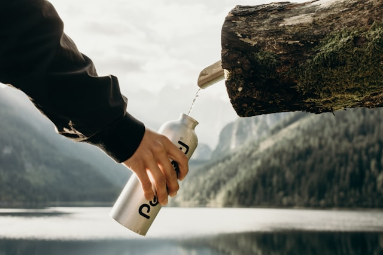

Your Daily Dose...of water?
What's the word?
You've probably heard the advice to drink eight glasses of water a day. That's easy to remember, and it's a reasonable goal. Every day you lose water through your breath, perspiration, urine and bowel movements. For your body to function properly, you must replenish its water supply by consuming beverages and foods that contain water. Lack of water can lead to dehydration — a condition that occurs when you don't have enough water in your body to carry out normal functions. Even mild dehydration can drain your energy and make you tired.
How much you should drink by weight
| Body Weight | Water Intake | 8 oz Glasses |
|---|---|---|
| 120 lbs | 60 oz | 8 Glasses |
| 140 lbs | 70 oz | 9 Glasses |
| 160 lbs | 80 oz | 10 Glasses |
| 180 lbs | 90 oz | 11 Glasses |
| 200 lbs | 100 oz | 12 Glasses |
Can you drink too much water?
Drinking too much water is rarely a problem for healthy, well-nourished adults. Athletes occasionally may drink too much water in an attempt to prevent dehydration during long or intense exercise. When you drink too much water, your kidneys can't get rid of the excess water. The sodium content of your blood becomes diluted. This is called hyponatremia and it can be life-threatening.